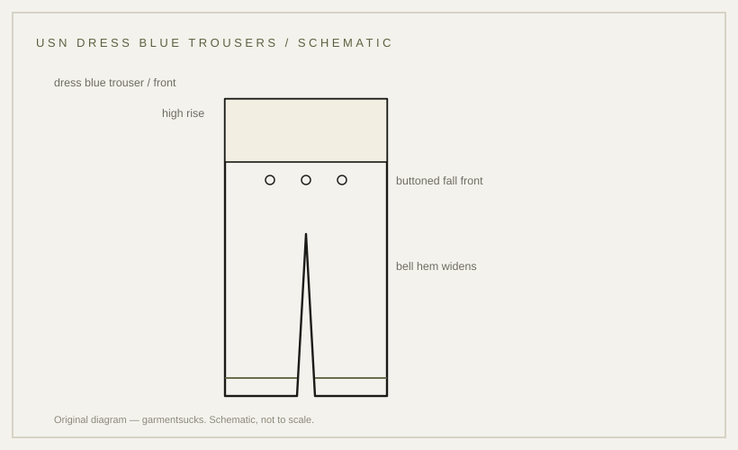

construction · 1943
The sailor's bell-bottoms: wool, fall front, wide hem
The widest trousers in uniform, and an engineering answer to working at sea.
probable Published 2026-11-13 · last checked 2026-11-13

1. Summary
US Navy dress blue trousers for enlisted sailors are wool, cut with a high rise, a buttoned broad fall front and a bell-shaped hem.
The wool and the dress-blue designation are recorded in a museum catalogue; the cut details were not found in a document opened for this card. Confidence: probable — wool and designation come from museum metadata; the cut was not found.
2. What this is
Dress blue trousers: the dark-blue lower half of the Navy dress uniform, worn by enlisted sailors. The broad fall front is a flap that buttons across the belly instead of a fly; the bell-bottom is a hem that widens toward the shoe.
Wool flannel is a soft, brushed wool with a warm hand; it insulates even when damp, which is why naval clothing stayed wool long after field clothing moved to cotton.
3. Origin and context
The 1941 US Navy Uniform Regulations, issued on 31 May 1941, define the dress uniforms of the period. The regulations are an official publication, but this card did not open the full text, so no wording from them is quoted here.
A Smithsonian National Museum of American History record catalogues a pair of enlisted dress blue trousers in wool with a WWII association (object 2017.0228.02). The record was reachable only as metadata, not as an opened page.
4. How it works
A wide hem can be rolled up over a boot, and it sheds quickly in water. The high rise and the fall front keep the waist clear of a jumper and a belt.
That explanation is inference from the garment, not a statement from a document. The surviving evidence establishes the material and the uniform designation; it does not establish why the hem was shaped this way.
5. Construction
The work order readable from the garment: cut the legs wide, join the fall front to the waistband with buttons, set the pockets into the side seams, close the legs, then face and finish the hem at the bell width.
This sequence is inferred from garment construction; no document opened for this card states it. Original wool is heavy and slightly hairy, and the fall front closes with a row of buttons rather than a zip.
6. Variants across eras
| Variant | Year/country | Difference | Source status |
|---|---|---|---|
| Dress blue trousers, wool | WWII period, US | wool, high rise, fall front, bell hem | material and designation per museum metadata; cut unverified |
| White dress trousers | same period, US | cotton drill for summer dress | not found |
| Dungarees / working blues | same period, US | denim work trousers, not dress | not found |
| Modern reproduction | present | lighter wool, shorter rise | market observation |
7. Telling an original from a reproduction
On a genuine pair the wool is thick and soft, the fall front is a full flap rather than a fly, and the hem is cut wide. Reproductions often use lighter wool, a zip fly, or a narrower hem.
Check the inside waistband for a contractor stamp or name; the absence of a stamp is not proof either way on a garment this old.
8. Common mistakes and myths
The first myth is that the flare is decorative. It has a working purpose, though the sources on this card do not state it in writing.
The second is treating every dark-blue Navy trouser as the same garment: officers' service trousers are a different cut and cloth from the enlisted dress blue.
9. How to read it in wear
The trousers read through the hem: how wide the leg falls over the shoe, and how high the waist sits under a jumper. A narrow hem changes the whole uniform.
10. Modern designer trail
The wide-leg sailor trouser is a recurring reference in workwear and avant-garde collections, usually with the rise lowered and the wool replaced. No direct-influence claim is made here.
11. Specification
The left column records only what a source states. No reproduction figures are proposed.
| Recorded in sources | Reproduction suggestion |
|---|---|
| Enlisted dress blue trousers; wool (Smithsonian NMAH 2017.0228.02; metadata excerpt) | — |
| Dress uniform defined by US Navy Uniform Regulations, 31 May 1941 (official publication; full text not opened) | — |
| Cut details (rise, fall front, bell hem): not found in opened sources | — |
12. Questions and exercises
1) Is the fly on a pair you own a fall front or a zip? 2) Does the wool feel heavy and soft, or thin and dry? 3) Which claims on this card would change if the 1941 regulations were opened?

Glossary
- Fall front
- Flap that buttons across the belly instead of a fly.
- Bell-bottom
- Hem that widens toward the shoe.
- Wool flannel
- Soft brushed wool with a warm hand.
- Rise
- Distance from crotch to waistband.
Sources
- [S1] [T1] Smithsonian NMAH, object 2017.0228.02 — Enlisted dress blue trousers, wool, WWII (metadata excerpt; page not opened)
- [S2] [T1] US Navy Uniform Regulations, 31 May 1941 (official publication; PDF not opened)
- [S3] [T3] Grailed listing 95633828 — listing photo, @coveManor, Grailed, accessed 2026-11-13
Claims & sources
| Claim | Source | Tier | URL | Status |
|---|---|---|---|---|
| Enlisted dress blue trousers; wool; WWII association | Smithsonian NMAH 2017.0228.02 | T1 | link | partially verified (metadata excerpt) |
| Dress uniform defined by US Navy Uniform Regulations, 31 May 1941 | US Navy Uniform Regulations 1941 | T1 | link | unverified (full text not opened) |
| High rise, buttoned fall front, bell-shaped hem | no opened source | — | not found | |
| Flare allows the leg to be rolled or shed in water | inference from garment | — | inference |